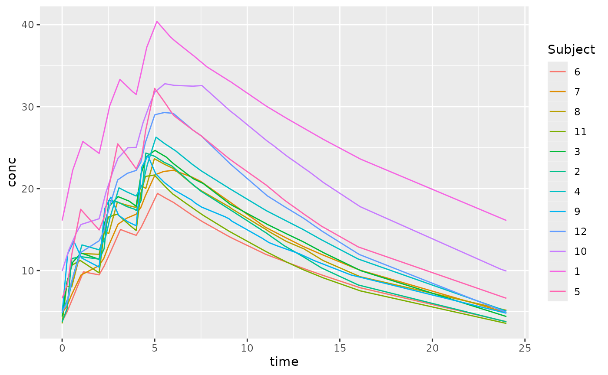
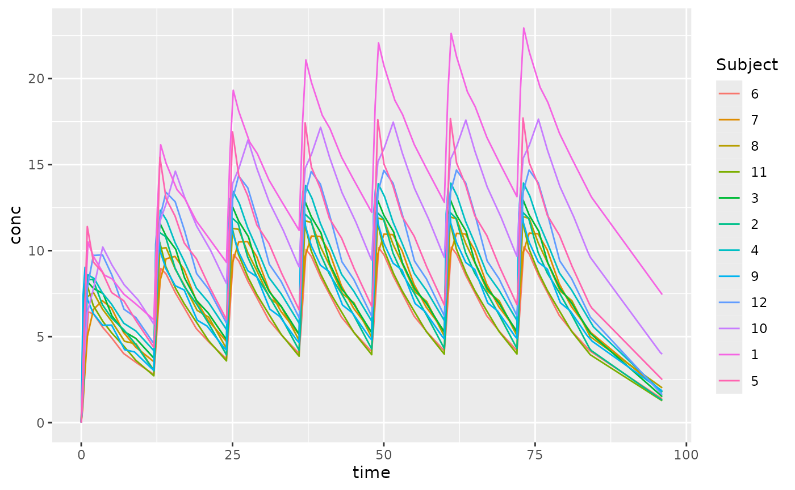

Superposition of Pharmacokinetic Data
Bill Denney
Source:vignettes/v20-superposition.Rmd
v20-superposition.RmdExamples simplify understanding. Below is an example of how to use the theophylline dataset to estimate the concentration for each subject after multiple doses.
Load the data
| Subject | Wt | Dose | Time | conc |
|---|---|---|---|---|
| 1 | 79.6 | 4.02 | 0.00 | 0.74 |
| 1 | 79.6 | 4.02 | 0.25 | 2.84 |
| 1 | 79.6 | 4.02 | 0.57 | 6.57 |
| 1 | 79.6 | 4.02 | 1.12 | 10.50 |
| 1 | 79.6 | 4.02 | 2.02 | 9.66 |
| 1 | 79.6 | 4.02 | 3.82 | 8.58 |
The columns that we will be interested in for our analysis are conc, Time, and Subject in the concentration data.
## By default it is groupedData; convert it to a data frame for use
conc_obj <- PKNCAconc(as.data.frame(datasets::Theoph), conc~Time|Subject)Compute the Superposition from Single-Dose Data to Steady-State
With a simple call, we can have the estimated steady-state
concentration for each subject. At minimum, the time between dosing
(tau) must be provided.
steady_state <- superposition(conc_obj, tau=24)## Warning in parallel::mclapply(X = seq_len(nrow(nested_data)), FUN =
## function(idx) {: all scheduled cores encountered errors in user codeThe error noting that the first concentration must be zero is due to the fact that superposition usually occurs with single-dose data. If the first concentration is nonzero, the data are not likely to be single-dose (or a data error should be fixed). Let’s find the offending data.
knitr::kable(subset(datasets::Theoph, Time == 0 & conc > 0),
caption="Nonzero predose measurements",
row.names=FALSE)| Subject | Wt | Dose | Time | conc |
|---|---|---|---|---|
| 1 | 79.6 | 4.02 | 0 | 0.74 |
| 7 | 64.6 | 4.95 | 0 | 0.15 |
| 10 | 58.2 | 5.50 | 0 | 0.24 |
For this example, we will assume that these were errors, correct them to zero, and recalculate.
## Correct nonzero concentrations at time 0 to be BLQ.
theoph_corrected <- as.data.frame(datasets::Theoph)
theoph_corrected$conc[theoph_corrected$Time == 0] <- 0
conc_obj_corrected <- PKNCAconc(theoph_corrected, conc~Time|Subject)
## Calculate the new steady-state concentrations with 24 hour dosing
steady_state <- superposition(conc_obj_corrected, tau=24)
knitr::kable(head(steady_state, n=14),
caption="Superposition at steady-state")| Subject | conc | time |
|---|---|---|
| 1 | 4.856234 | 0.00 |
| 1 | 7.637741 | 0.25 |
| 1 | 9.008665 | 0.37 |
| 1 | 11.293912 | 0.57 |
| 1 | 15.099676 | 1.12 |
| 1 | 14.063389 | 2.02 |
| 1 | 12.615588 | 3.82 |
| 1 | 12.152885 | 5.10 |
| 1 | 10.924249 | 7.03 |
| 1 | 10.022157 | 9.05 |
| 1 | 8.639209 | 12.12 |
| 1 | 4.857207 | 24.00 |
| 2 | 1.010060 | 0.00 |
| 2 | 2.703513 | 0.27 |
The output is a tbl_df, tbl, data.frame including all the grouping
factors as columns, a column for concentration, and a
column for time. Time point selection ensures that the
beginning and end of the interval are included and that every measured
time that contributes to the interval is included. The points at the
beginning and end of the interval are very similar; they are within a
tolerance of 0.001 as defined by the steady.state.tol
argument to superposition.
Nonstandard Superposition Computations
Compute the Superposition from Single-Dose Data to a Specific Dose
If simulation to a specific dose is needed, the number of dosing
intervals (n.tau) can be specified.
## Calculate the unsteady-state concentrations with 24 hour dosing
unsteady_state <- superposition(conc_obj_corrected, tau=24, n.tau=2)
knitr::kable(head(unsteady_state, n=14),
caption="Superposition before steady-state")| Subject | conc | time |
|---|---|---|
| 1 | 3.3393647 | 0.00 |
| 1 | 6.1391369 | 0.25 |
| 1 | 7.5187500 | 0.37 |
| 1 | 9.8183657 | 0.57 |
| 1 | 13.6629359 | 1.12 |
| 1 | 12.6879608 | 2.02 |
| 1 | 11.3550445 | 3.82 |
| 1 | 10.9681517 | 5.10 |
| 1 | 9.8452907 | 7.03 |
| 1 | 9.0438064 | 9.05 |
| 1 | 7.7960929 | 12.12 |
| 1 | 4.3830987 | 24.00 |
| 2 | 0.9268958 | 0.00 |
| 2 | 2.6226541 | 0.27 |
Compute the Superposition from Single-Dose Data with >1 Dose Per Interval
Some dosing intervals are more complex than once per X hours (or days
or weeks or…). To predict more complex dosing with superposition, give
the dose times within the interval. The dose.times must all
be less than tau (otherwise they are not in the
interval).
## Calculate the new steady-state concentrations with 24 hour dosing
complex_interval_steady_state <- superposition(conc_obj_corrected, tau=24, dose.times=c(0, 2, 4))
knitr::kable(head(complex_interval_steady_state, n=10),
caption="Superposition at steady-state with complex dosing")| Subject | conc | time |
|---|---|---|
| 1 | 16.10210 | 0.00 |
| 1 | 18.74815 | 0.25 |
| 1 | 20.05464 | 0.37 |
| 1 | 22.23332 | 0.57 |
| 1 | 25.75130 | 1.12 |
| 1 | 24.29240 | 2.00 |
| 1 | 24.48753 | 2.02 |
| 1 | 26.79323 | 2.25 |
| 1 | 28.03334 | 2.37 |
| 1 | 30.10259 | 2.57 |

With this more complex dosing interval, the number of time points estimated increases. The next section describes the selection of time points.
Show the Curve to Steady-State
To determine the concentration curve to get to steady-state, you can
give all the dose times considered required to get to steady-state. To
do this, specify tau as the total time to steady-state, specify
n.tau as 1 to indicate that only one round of
dosing should be administered.
This command does not technically go to steady-state; if the
dose.times are not sufficiently long to reach steady-state,
it only goes for as many doses as requested.
up_to_steady_state <- superposition(conc_obj_corrected,
tau=4*24,
n.tau=1,
dose.times=seq(0, 3*24, by=12))
Time Point Selection and Addition
Superposition is often used to estimate NCA parameters with nonparametric methods. To ensure that estimated parameters are as accurate as possible (especially ), each dose has every post-dose time point included. Specifically, each dose will have the following times:
- 0 (zero) and
tau, - The time of each dose (the
dose.timesargument) - Every value from the time column of the data modulo
tau(shifting the time for each measurement to be within the dosing interval) repeated for each dose, and - each time from the
additional.timesargument.
How the number of time points increases can be seen by comparing the time points for subject 1 in the steady-state single dosing and the complex dosing examples above.
steady_state$time[steady_state$Subject == 1]## [1] 0.00 0.25 0.37 0.57 1.12 2.02 3.82 5.10 7.03 9.05 12.12 24.00
sum(steady_state$Subject == 1)## [1] 12
complex_interval_steady_state$time[complex_interval_steady_state$Subject == 1]## [1] 0.00 0.25 0.37 0.57 1.12 2.00 2.02 2.25 2.37 2.57 3.12 3.82
## [13] 4.00 4.02 4.25 4.37 4.57 5.10 5.12 5.82 6.02 7.03 7.10 7.82
## [25] 9.03 9.05 9.10 11.03 11.05 12.12 13.05 14.12 16.12 24.00
sum(complex_interval_steady_state$Subject == 1)## [1] 34Interpolation and Extrapolation Methods
The interpolation and extrapolation methods align with those used for
calculating the AUC. By default, interpolation uses the
PKNCA.options selection for "auc.method" and
extrapolation follows the curve of
.
These can be modified with the interp.method and
extrap.method arguments.